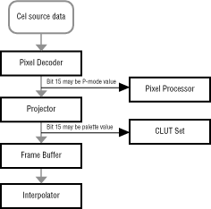
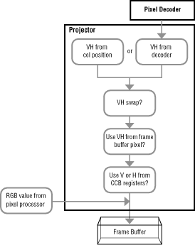

As a pixel makes its way through the various graphics components of a
3DO system, it's a relatively simple matter to follow the R, G, and B
values of the pixel. They are the primary values stored in each pixel
and the processes that affect them are clearly delineated. VH values,
however, have the status of a hitchhiker. They can be bumped or replaced
at any time before they make their way to the interpolator to set the
position of the pixel's cornerweight. Figure 1 shows how VH values are
used. VH values are processed by the decoder and the projector and finally
processed by the interpolator-the destination of all VH values. Along the way, the V bit may be read as an alternate value.

Figure 1: Processing VH values.
An Overview of the Path
The VH path contains two kinds of points important to the VH value: processing points, where the VH value can be changed when the pixel is processed; and alternate value points, where the VH value can carry an alternate value.
Processing Points
VH values are subject to processing at several points in their path:
The pixel decoder can extract a VH value from the PLUT while decoding a pixel.
The projector can bring in a new VH value from the CCB or another source before adding a VH value to the color values coming out of the pixel processor.
The interpolator reads the VH value to determine the cornerweight positions of pixels.
You should know what happens at each of these processing points so you can program accordingly and get the VH values you want when a pixel reaches the interpolator.
Alternate Value Points
Other important points in the path of a VH value are places where VH bits are used to carry an alternate value. Those points are
Just before the pixel processor, where the V bit carries a P-mode value
Just before the CLUT sets, where the V bit determines which palette is used
Any time a V or H bit carries an alternate value, it cannot safely carry a cornerweight value because you cannot assume that the cornerweight value and the alternate value will be the same. By knowing where alternate values are read, you can program accordingly to provide those alternate values or, if you choose not to, make sure that the VH value is not read as an alternate value.
Note that in a pixel value, the high bit is usually the V value and bit 0 is the H value. That is not always the case, but consider it the rule for most cases unless stated otherwise.
Path Simplification
Note that most cels and figures drawn into the frame buffer do not use individual VH values for each pixel. They use the same VH value for each pixel, so processing is very simple, in part because the VH value does not need to appear until late in the path, perhaps as late as just before the interpolator. Most Graphics folio calls take care of the VH value for you.
The following sections describe the VH path in more detail.
Processing Cel Source Data in the Pixel Decoder
The first place you can set a VH value is in the cel source data.
That value will probably be ignored by the pixel decoder, which may,
depending on the type of cel, decide to replace it with VH bits of its own.
Those replacement VH bits are stored in the PLUT registers along with color
values. Table 1 shows how the decoder processes each cel type and where the
resulting V and H values come from.
Only the uncoded 16-bit cel passes VH values directly through the decoder without change. The 16-bit and 6-bit coded cels each pass a single V bit unaltered through the decoder, and the 8-bit uncoded cel passes a single H bit through while its V bit is completely undefined. The rule of thumb: if you want to set meaningful VH bits in a cel, use an uncoded 16-bit cel. If you are going to use the V bit to carry another value such as the P-mode value, then consider 8- and 16-bit coded cels. Do not use an 8-bit uncoded cel if you need to carry a P-mode value, because it does not have a defined V bit, and is not able to carry that value.
Reading a P-Mode Value for the Pixel Processor
Once a pixel passes through the decoder, the value carried in its V bit is sent directly to the pixel processor where it can set the P-mode if per-pixel P-mode is enabled. If you want to set the P-mode with the V bit, you must make sure that its value is set appropriately in the PLUT registers or in the original pixels of 6- and 16-bit coded cels. If you have co-opted the V value for a P-mode value, you can replace it by assigning a completely new VH value in the next stage of the path.
Processing VH Values in the Projector
When a pixel emerges from the decoder, its VH value is stripped from the
pixel and passed completely around the pixel processor, which processes
only color data. The VH value is fed into the projector, which processes
the VH bits, as shown in Figure 2, adds the VH value back to the RGB data
coming from the pixel processor, and then projects the full pixel into the
frame buffer. The projector offers five VH options, described in the sections
that follow.

Figure 2: Projecting a VH value
Cel Position VH Value
This option replaces the incoming VH value with a single value set by the XPOS and YPOS fields of the CCB. These two fields set the cel's projection position in the frame buffer and specify that position in a 640-by-480 grid so the cel can smoothly scroll in subpixel increments. That position naturally falls into any one of four corner positions, and it's the corner position that sets the VH value given to the pixel.
This is the most common source of VH values for all the pixels of a cel. Fine scrolling in subpixel increments shifts the uniform VH value for all cel pixels, which makes the cel scrolling very smooth. If this VH option is defeated, then the cel cannot scroll in 640-by-480 coordinates and can only use coarse scrolling in 320-by-240 coordinates. This is not a drawback if, as is usually the case, the VH information comes from elsewhere and shifts to give the appearance of fine scrolling.
Decoder VH Value
This option uses the VH value coming in from the decoder and ignores the cel position VH value, defeating fine scrolling. This option is not used as often as the cel position option is. Its chief value is for cels that contain individual pixel cornerweights, such as text cels.
VH Swap
This option, which comes after a VH value is determined in the first two options, swaps the V and H bits so the former V bit contains horizontal data and the former H bit contains vertical data. The option is turned on or off in the cel's CCB. Although rarely used, it can be useful if a cel pixel must carry a V value through the decoder intact and also contain a P-mode value. The V value is stored in the H bit (bit 0) and the P-mode value is stored in the V bit. Once the P-mode value is extracted, the VH swap option returns the V value to the traditional V bit.
A16-bit uncoded cel should not have its VH values swapped, because it is supposed to be a literal representation of the values to be written into the frame buffer. The preamble for a 16-bit uncoded cel contains a flag that can override the CCB order to swap the VH bits. This is useful when a single CCB controls more than one cel.
Current Frame-Buffer Pixel VH Value
This option is available after the VH swap option. It considers the VH value of the frame buffer pixel lying beneath the current cel pixel's projection location. It then optionally substitutes that value for the VH value passed on by the previous three options.
This is a useful option when you do not want to disturb frame buffer VH values with cel VH values of a modifying cel. For example, if a cel of stained glass passes over individually cornerweighted pixels of text in the frame buffer, the VH values of the text should remain unaltered so the text is still easy to read as the cel passes over.
Preset CCB V and H Values
The final option completely overwrites the VH value from any of the previous options, using values stored in two CCB registers: a stored V value (to be written to bit 15) and a stored H value (to be written to bit 0). The stored V value can be either 0 or 1; the stored H value can be either 0 or 1, or can specify that H will take the value of the least-significant blue-value bit coming out of the pixel processor. This option allows you to change a single V or H value while the other value remains unchanged; this option also allows the full 5-bit blue value to be projected if color information is more important than horizontal cornerweight information.
Once the VH bits are finally set, the projector takes the RGB bits coming out of the pixel processor (bits 0 to 14) and adds the VH value, writing it into bits 0 and 15. The resulting value is projected into the frame buffer.
Reading a Palette Value
Once a pixel is written into the frame buffer by the cel engine, SPORT bus, or direct primitive rendering, its VH bits do not undergo any more processing until they reach the interpolator. The V bit can, however, be read for an alternate value while in the frame buffer: bit 15 can set either one of two palettes used to interpret 15-bit color values. If bit 15 is used this way, it cannot reliably carry a V value, and you sacrifice vertical cornerweighting to be able to set a different palette for each pixel in the frame buffer. If you choose not to set the palette per pixel, the full VH value can be used to set cornerweight position.
Processing VH Values in the Interpolator
The interpolator receives a VH value for each pixel and can process that value in many different ways. Those ways are set by display commands in the VDL, so interpolator operation can change from line to line of the video display.
The interpolator's options in reading a VH value are as follows:
Read the incoming VH value as is.
Read only the bit-15 value and supply the bit- 0 value from a constant set in the display command.
Read only the bit-0 value and supply the bit-15 value from a constant set in the display command.
Ignore the incoming VH value and use the bit-0 and -15 values set in the display command.
The interpolator's options in interpreting a VH value are as follows:
Use bit 15 for vertical cornerweight position and bit 0 for horizontal cornerweight position (the traditional interpretation)
Use bit 0 for vertical cornerweight position and bit 15 for horizontal cornerweight position (effectively swapping V and H values)
As you can see, the interpolator's reading and interpretation of VH values is
flexible, and can override any VH manipulation done previously if you so
desire.